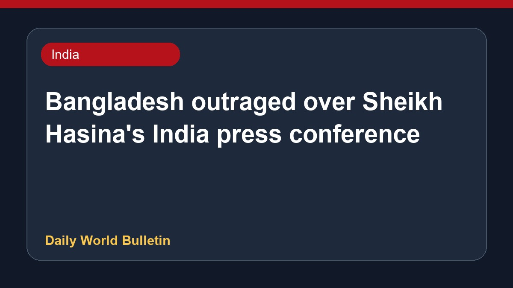

Bangladesh outraged over Sheikh Hasina's India press conference

The Bangladesh government has expressed deep anger following a recent press conference held by former Prime Minister Sheikh Hasina in India. During the media interaction, Ms. Hasina vowed to return to Bangladesh this December, stating she is prepared to face arrest or potential legal consequences. Meanwhile, her son cautioned that the nation risks transforming into another Pakistan. These developments highlight ongoing political tensions surrounding her leadership and future plans following the recent coup.
Original source: India News Sources
Bangladesh government ‘outraged’ over Sheikh Hasina’s press conference in India - thehindu.com ↗
Bangladesh government ‘outraged’ over Sheikh Hasina’s press conference in India - thehindu.com ↗